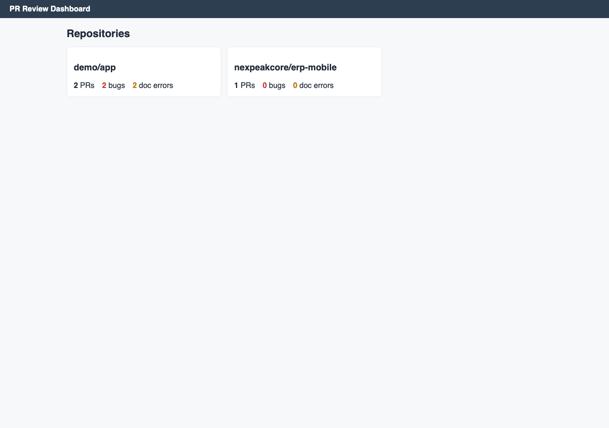
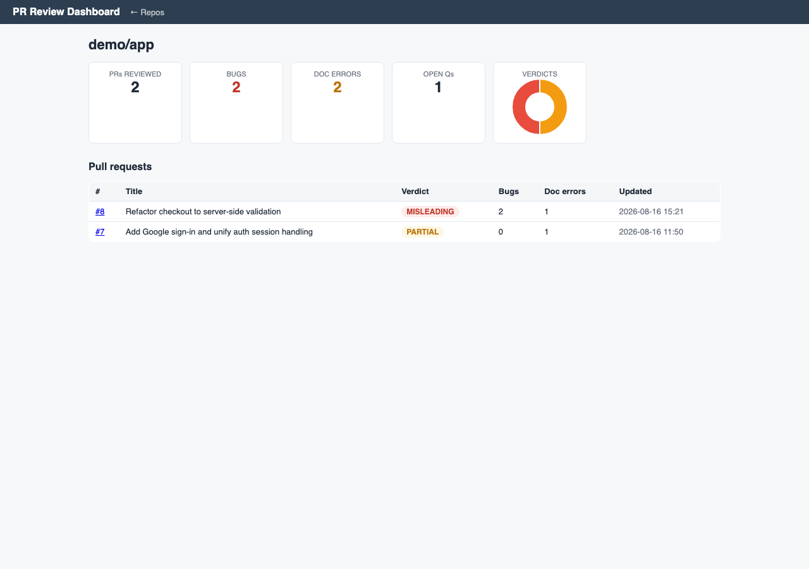
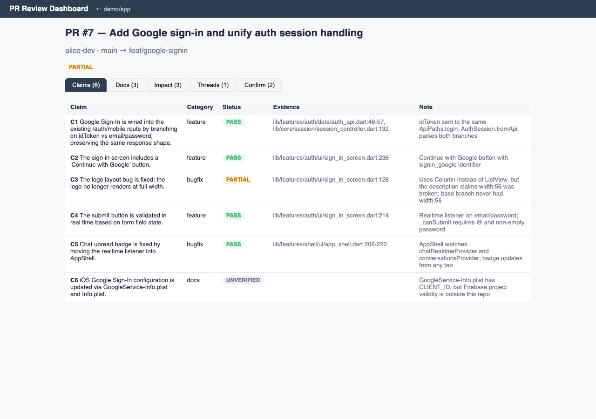
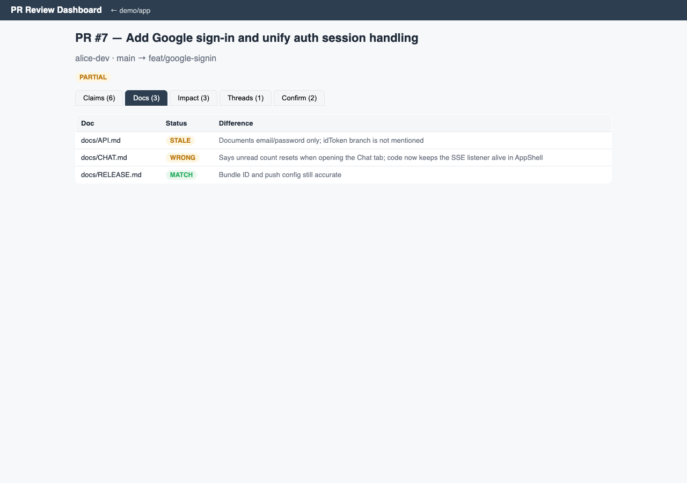

Headless PR review automation: reads your pull request, deep-dives into the code, and tells you whether the description actually matches reality — claim by claim.
View on GitHub QuickstartFive phases, one command. Every phase writes structured JSON to sessions/ so results are auditable and re-runnable.
Fetch PR metadata, diff, commits and review threads from GitHub (REST + GraphQL).
LLM splits the PR description into verifiable claims — each one checkable against the code.
A DeepSeek Harness agent deep-dives in a disposable worktree: claim verdicts, docs reality-check, requirement impact, thread status.
Confirmation questions (≤20 words) only when docs look wrong or a claim can't be verified. No guessing.
English report.md + one idempotent comment on the PR. Re-runs update the comment in place.
A local read-only web dashboard shows per-repo metrics and per-PR details with evidence. Demo data included.




Built for teams that don't trust their PR descriptions or their docs.
Every sentence of the PR description is checked against the actual code with evidence.
Up to 60% of docs are wrong or fabricated. The agent cross-checks docs against code and flags them.
Understands which business requirements a change touches and whether it breaks anything.
Confirmation prompts are short, one at a time, and only when the agent can't decide.
Local poller reviews new PRs automatically and re-reviews when the head commit changes.
All phases persist structured JSON. Comments are never duplicated.
Python 3.10+, a GitHub token (gh auth login) and a DeepSeek API key.
git clone https://github.com/nexpeakcore/deepseek-harness-pr-review.git
cd deepseek-harness-pr-review
python -m venv .venv && . .venv/bin/activate
pip install -e '.[web]'
export DEEPSEEK_API_KEY=sk-...
gh auth login
# Review one PR (interactive)
python -m src.run owner/repo 123
# Dashboard
DSH_SESSION_ROOT=sessions python -m web.server # → http://127.0.0.1:8000
# Auto review every new PR
python -m src.autoreview --daemon